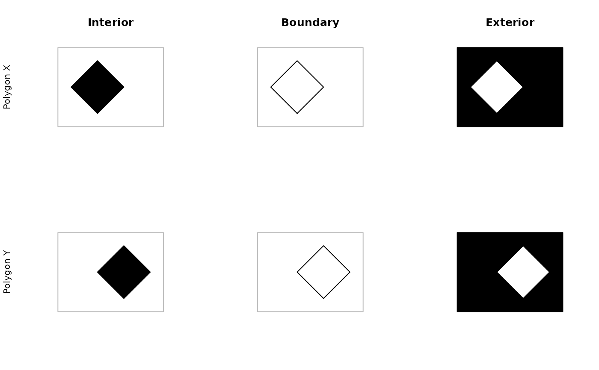
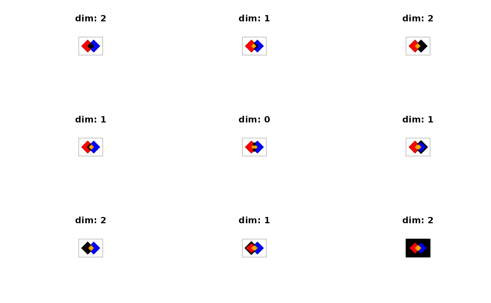

pred-binary-gRelate.RdDetermines the relationships between two geometries by comparing the intersection of Interior, Boundary and Exterior of both geometries to each other. The results are summarized by the Dimensionally Extended 9-Intersection Matrix or DE-9IM.
gRelate(spgeom1, spgeom2 = NULL, pattern = NULL, byid = FALSE, checkValidity=FALSE)
| spgeom1, spgeom2 | sp objects as defined in package sp. If spgeom2 is NULL then spgeom1 is compared to itself. |
|---|---|
| byid | Logical vector determining if the function should be applied across ids (TRUE) or the entire object (FALSE) for spgeom1 and spgeom2 |
| pattern | Character string containing intersection matrix pattern to match against DE-9IM for given geometries. Wild card |
| checkValidity | default FALSE; error meesages from GEOS do not say clearly which object fails if a topology exception is encountered. If this argument is TRUE, |
By default returns a 9 character string that represents the DE-9IM.
If pattern returns TRUE if the pattern matches the DE-9IM.
Each geometry is decomposed into an interior, a boundary, and an exterior region, all the resulting geometries are then tested by intersection against one another resulting in 9 total comparisons. These comparisons are summarized by the dimensions of the intersection region, as such intersection at point(s) is labeled 0, at linestring(s) is labeled 1, at polygons(s) is labeled 2, and if they do not intersect labeled F.
If a pattern is specified then limited matching with wildcards is possible, * matches any character whereas T matches any non-F character.
See references for additional details.
Error messages from GEOS, in particular topology exceptions, report 0-based object order, so geom 0 is spgeom1, and geom 1 is spgeom2.
Documentation of Intersection Matrix Patterns: http://docs.geotools.org/stable/userguide/library/jts/dim9.html
Roger Bivand & Colin Rundel
gContains
gContainsProperly
gCovers
gCoveredBy
gCrosses
gDisjoint
gEquals
gEqualsExact
gIntersects
gOverlaps
gTouches
gWithin
x = readWKT("POLYGON((1 0,0 1,1 2,2 1,1 0))") x.inter = x x.bound = gBoundary(x) y = readWKT("POLYGON((2 0,1 1,2 2,3 1,2 0))") y.inter = y y.bound = gBoundary(y) xy.inter = gIntersection(x,y) xy.inter.bound = gBoundary(xy.inter) xy.union = gUnion(x,y) bbox = gBuffer(gEnvelope(xy.union),width=0.5,joinStyle='mitre',mitreLimit=3) x.exter = gDifference(bbox,x) y.exter = gDifference(bbox,y) # geometry decomposition par(mfrow=c(2,3)) plot(bbox,border='grey');plot(x,col="black",add=TRUE);title("Interior",ylab = "Polygon X") plot(bbox,border='grey');plot(x.bound,col="black",add=TRUE);title("Boundary") plot(bbox,border='grey');plot(x.exter,col="black",pbg='white',add=TRUE);title("Exterior") plot(bbox,border='grey');plot(y,col="black",add=TRUE);title(ylab = "Polygon Y") plot(bbox,border='grey');plot(y.bound,col="black",add=TRUE) plot(bbox,border='grey');plot(y.exter,col="black",pbg='white',add=TRUE)defaultplot = function() { plot(bbox,border='grey') plot(x,add=TRUE,col='red1',border="red3") plot(y,add=TRUE,col='blue1',border="blue3") plot(xy.inter,add=TRUE,col='orange1',border="orange3") } # Dimensionally Extended 9-Intersection Matrix pat = gRelate(x,y) patchars = strsplit(pat,"")[[1]] par(mfrow=c(3,3)) defaultplot(); plot(gIntersection(x.inter,y.inter),add=TRUE,col='black') title(paste("dim:",patchars[1])) defaultplot(); plot(gIntersection(x.bound,y.inter),add=TRUE,col='black',lwd=2) title(paste("dim:",patchars[2])) defaultplot(); plot(gIntersection(x.exter,y.inter),add=TRUE,col='black') title(paste("dim:",patchars[3])) defaultplot(); plot(gIntersection(x.inter,y.bound),add=TRUE,col='black',lwd=2) title(paste("dim:",patchars[4])) defaultplot(); plot(gIntersection(x.bound,y.bound),add=TRUE,col='black',pch=16) title(paste("dim:",patchars[5])) defaultplot(); plot(gIntersection(x.exter,y.bound),add=TRUE,col='black',lwd=2) title(paste("dim:",patchars[6])) defaultplot(); plot(gIntersection(x.inter,y.exter),add=TRUE,col='black') title(paste("dim:",patchars[7])) defaultplot(); plot(gIntersection(x.bound,y.exter),add=TRUE,col='black',lwd=2) title(paste("dim:",patchars[8])) defaultplot(); plot(gIntersection(x.exter,y.exter),add=TRUE,col='black')